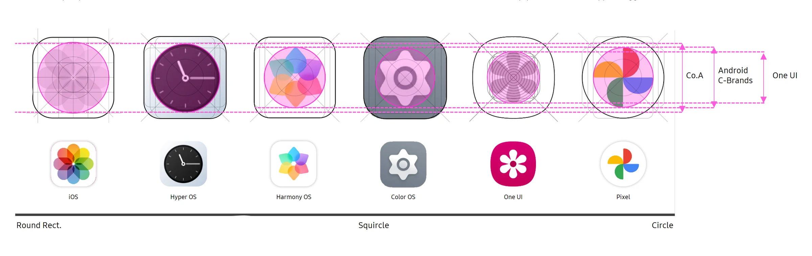
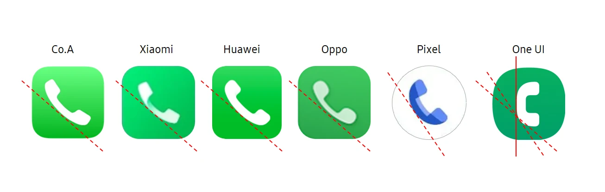
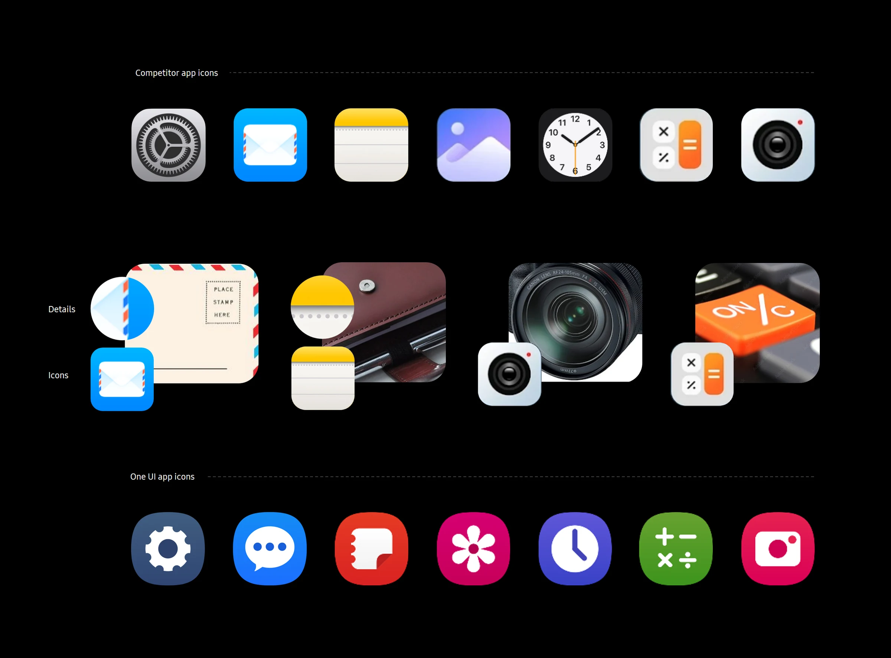
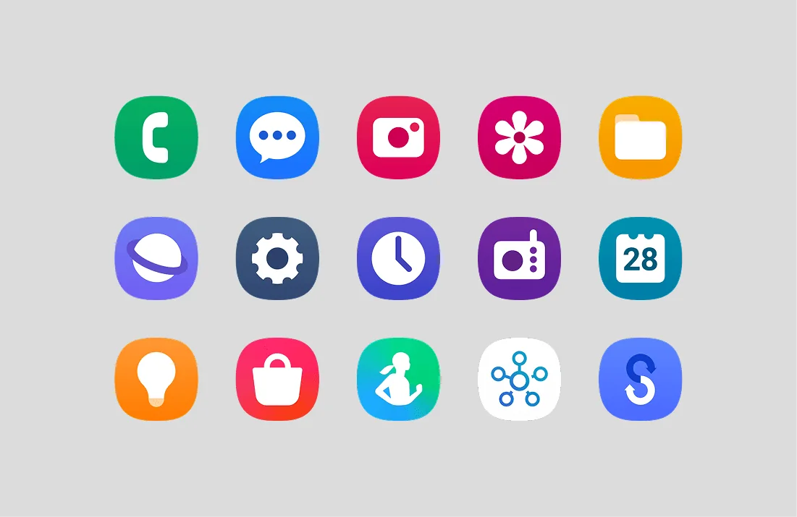

One UI 7 Native Icons Strategy
One UI Icons was a strategic redesign initiative that challenged Samsung’s long-standing flat and highly simplified icon system, arguing that the future of iconography lies in essential yet expressive visuals that combine depth, relatability and emotional storytelling, while preserving the clarity and harmony that define One UI.
A research project on One UI 6’s app icons, which set the direction for the icons in One UI 7. I was one of the hands-on designers, working on the competitive benchmarking, the research and the strategy.
- Company
- Samsung Design Delhi
- Team
- 3 designers
- My part
- Benchmarking, research, strategy
- Timeline
- 3 months
- Outcome
- Direction used for the One UI 7 icons
Background
For years, One UI’s icons have been bright squircles with flat white symbols: simple, consistent and instantly Samsung.
Across the industry, though, icons were changing. Apple and others were adding depth, material and real-world detail, turning symbols back into objects with a purpose and a story.
Recognisable isn’t the same as intuitive.
So we asked whether One UI’s icons were as easy to understand as they were to recognise, especially for someone picking up a Galaxy for the first time.
Research
We began by studying how other platforms design their interfaces and icons: iOS, stock Android, Nothing, the major Chinese manufacturers such as Xiaomi, Huawei and Oppo, and Microsoft.
We looked at the bigger picture first. Interfaces were becoming more alive and responsive, more imaginative rather than purely functional, and more essential, keeping only what matters while staying familiar.
Then we compared icons app by app, through three lenses: container and grid, shape and metaphor, and colour and material.
Container & grid
One UI’s icons sit smaller within their containers than most competitors’. That leaves breathing room, but the overall proportions lose a sense of scale and perspective.
Competitor icons use more of the available space, which gives them a stronger presence and makes their details easier to see. Next to them, One UI icons can look flat: their relative size and proportions don’t convey depth or distance.
Play with scale to add perspective
Let the icon take centre stage and the container recede, treating icon and background as one.

Shape & metaphor
One UI uses the same metaphors as its competitors, but expresses them more statically. Where competitors use metaphors to communicate purpose, a One UI icon often feels like a symbol placed inside a container rather than an expressive object.
The phone, for example, could sit at the angle people actually hold one. Messages suggests waiting for a reply rather than a conversation, and Photos lacks a story.
Utility icons elsewhere treat the container as part of the canvas, using stacking, layering and physical relationships, while One UI’s Calendar and Notes simply echo the container. Small, essential details, like the markings on a ruler or the files in a folder, give competitor icons personality; One UI icons inform, but rarely invite engagement.
Service icons show it most. A wallet could hold several cards, shopping could suggest several items, music could feel like flow, and home could feel more personal.
Add essential, relatable details
Details that give each icon a purpose and personality, for a more mature and sophisticated impression.

Colour & material
Icons across the industry are moving from simple layered graphics to natural shadows, gradients, reflections and volume. Glassmorphism and natural lighting add a sense of space, and a wider range of colour creates a richer hierarchy.
One UI icons still rely on flat layering: white primary shapes and subtle gradients that reduce depth. Next to competitors, the overall impression feels basic, and the background colour is noticed before the icon’s shape.
Associative, not indicative
Let relevance, not rules, lead the visual treatment, with more depth, personality and emotional connection.

Key takeaways
Put side by side, the three lenses pointed to three clear problems, and a way forward for each.
- ContainerThe container is iconic, but not used well.
People register the background colour before they notice the icon. Making the icon bigger and letting the container recede treats the two as one.
- ShapeShapes are too basic, and show the function rather than the experience.
Simplifying too far removed the details that show what an app is for. Bringing back essential, relatable details gives a more mature, considered impression.
- ColourWeak colour links and strictly flat styling dilute each app’s character.
Following the flat rules everywhere makes the set feel monotonous. The app’s meaning, not a rulebook, should lead its colour and material. Even in a flat style, a single point of colour, like the orange equals key on a calculator, can feel tactile.
We summed up the direction for the One UI 7 icons in three words: alive & ambient, essential and imaginative.
Not less simple, but more expressive.
The answer wasn’t to abandon One UI’s simplicity. It was to keep icons essential while giving them depth, relatable details and a story, without losing the clarity and harmony One UI is known for.
Outcome
Samsung’s HQ design team created the One UI 7 icons based on our proposed direction.
Our recommendations, such as bigger icons within the container and richer colour, guided the HQ team, who designed and produced the final icon set.
